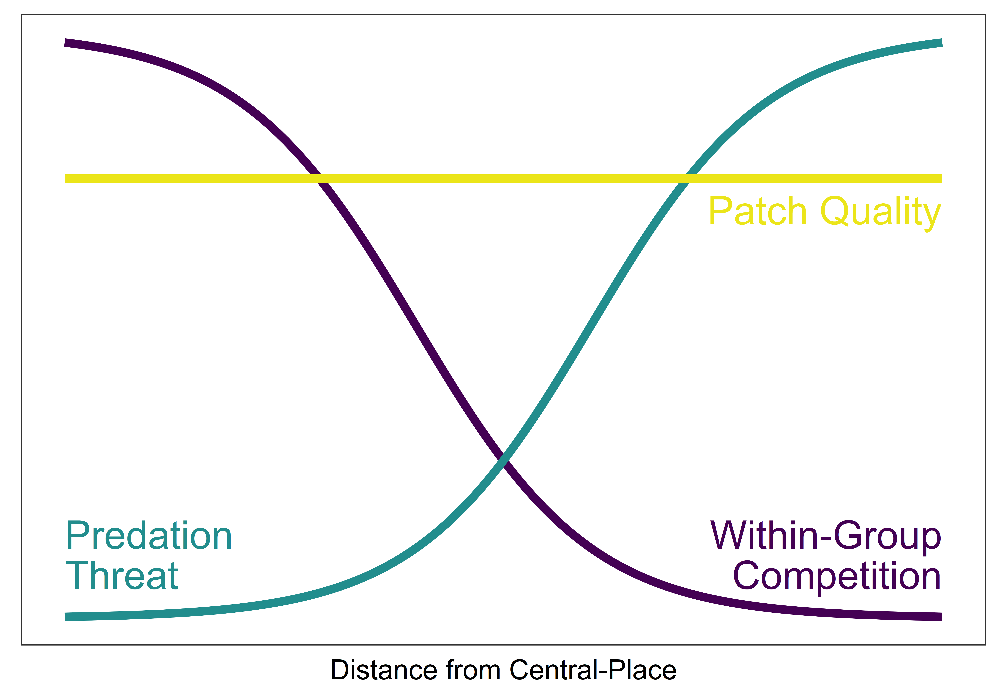
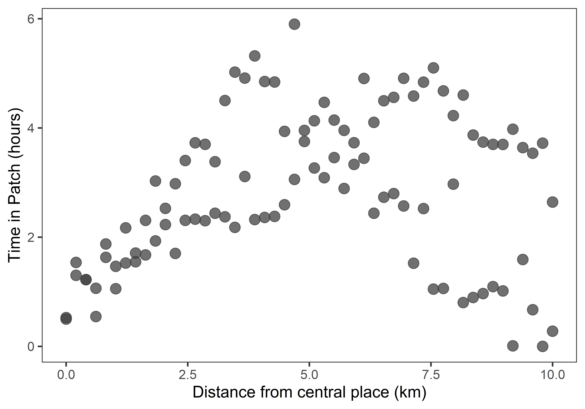
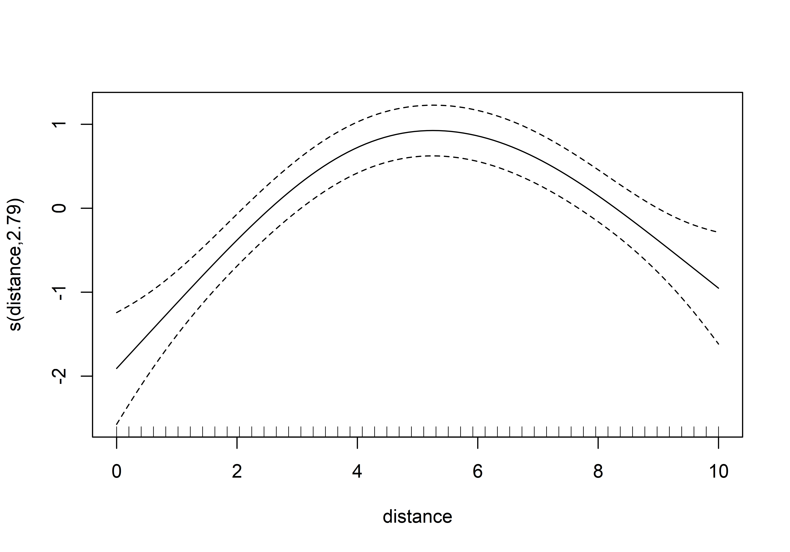
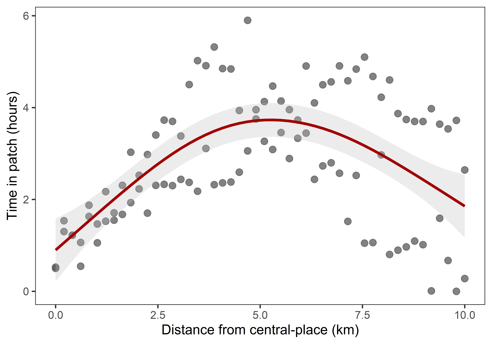
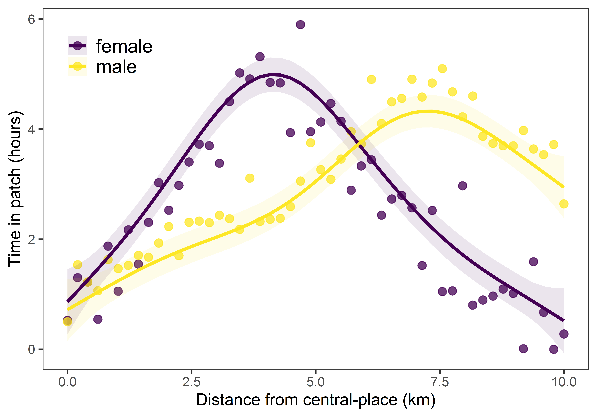

Lab 13
Generalized Additive Models
Outline
TL;DR Non-linear responses!
Caution! Please note that all labs assume that you are working in an RStudio Project directory!
Objectives
This lab will guide you through the process of
- Fitting a Generalized Additive Model
- Prediction with a GAM
- Fitting a GAM with an interaction term
R Packages
We will be using the following packages:
To install these packages, run the following code in your console:
install.packages(
c("dplyr", "ggeffects", "ggplot2", "here", "mgcv", "performance", "skimr", "viridis")
)Note: You should not install.packages()
in an Rmd document. Use that function in your R console instead. Then
use library() as part of the preamble in your Rmd document
to check packages out of the library and use them in that R session.
This should always go at the start of your document!
library(dplyr)
library(ggeffects)
library(ggplot2)
library(here)
library(mgcv)
library(performance)
library(skimr)
library(viridis)Data
patch-residence- A hypothetical dataset including distance from a central-place (in km) and time in patch (in hours).
- package: NA
- reference: https://github.com/kbvernon/qaad/tree/master/datasets
GAM
In this section, we’ll learn how to fit a Generalized Additive Model
(or GAM) using the gam() function from the
mgcv package. Here, we’ll be using the
patch-residence dataset to answer the following
question:
Question Do central-place foragers spend more time in patches some intermediate distance from a central-place when within-group competition and predation threat are both high?
For the sake of this exercise, we will assume that within-group competition is high closer to a central-place (because of population density) and decreases with distance. Conversely, predation threat is low near a central-place because of shared vigilance and increases with distance. Assuming that all patches are relatively equal in quality, this should lead individual foragers to invest most of their foraging effort into patches some intermediate distnace from a central place.

To test this model, let’s assume we go out and do focal follows with a hypothetical group of hunter-gatherers in an area known to have relatively high predation threat and relatively high population density at a central-place. You can download this dataset with the following code.
download.file(
"https://raw.githubusercontent.com/kbvernon/qaad/master/datasets/patch-residence.csv",
destfile = here("data", "patch-residence.csv")
)
patch <- here("data", "patch-residence.csv") %>%
read.csv() %>%
as_tibble()
skim(patch)| Name | patch |
| Number of rows | 100 |
| Number of columns | 3 |
| _______________________ | |
| Column type frequency: | |
| character | 1 |
| numeric | 2 |
| ________________________ | |
| Group variables | None |
Variable type: character
| skim_variable | n_missing | complete_rate | min | max | empty | n_unique | whitespace |
|---|---|---|---|---|---|---|---|
| sex | 0 | 1 | 4 | 6 | 0 | 2 | 0 |
Variable type: numeric
| skim_variable | n_missing | complete_rate | mean | sd | p0 | p25 | p50 | p75 | p100 |
|---|---|---|---|---|---|---|---|---|---|
| distance | 0 | 1 | 5.00 | 2.96 | 0 | 2.45 | 5.00 | 7.55 | 10.0 |
| time | 0 | 1 | 2.81 | 1.41 | 0 | 1.62 | 2.76 | 3.89 | 5.9 |
Notice that there are three variables in this dataset, including
sex (a factor level term), distance (for
distance from a central place, measured in kilometers), and
time (for time in patch, measured in hours). We’ll return
to the sex variable in the next section. For now, let’s
visualize the relationship between time in patch and distance from a
central place using a scatterplot.
ggplot(patch) +
geom_point(
aes(distance, time),
size = 4,
color = "gray25",
alpha = 0.75
) +
labs(
x = "Distance from central place (km)",
y = "Time in Patch (hours)"
) +
theme_bw(14) +
theme(
panel.grid = element_blank()
)
As you can see, it looks like there is a non-linear trend here. Just to be sure, though, let’s have a look at a simple linear model and plot the diagnostics for it.
patch_lm <- lm(time ~ distance, data = patch)
summary(patch_lm)
##
## Call:
## lm(formula = time ~ distance, data = patch)
##
## Residuals:
## Min 1Q Median 3Q Max
## -3.243 -0.838 -0.136 1.085 3.121
##
## Coefficients:
## Estimate Std. Error t value Pr(>|t|)
## (Intercept) 2.3517 0.2736 8.60 1.3e-13 ***
## distance 0.0910 0.0471 1.93 0.056 .
## ---
## Signif. codes: 0 '***' 0.001 '**' 0.01 '*' 0.05 '.' 0.1 ' ' 1
##
## Residual standard error: 1.39 on 98 degrees of freedom
## Multiple R-squared: 0.0366, Adjusted R-squared: 0.0268
## F-statistic: 3.73 on 1 and 98 DF, p-value: 0.0564Looks like distance is almost, but not-quite significant
in this model. Let’s check some diagnostic plots with
check_model() from the performance
package.
check_model(patch_lm)
Here, we can see that the residuals are normally distributed (a good sign). However, the linearity check shows an extremely non-linear relationship, and there’s a lot of heteroscedasticity. Let’s see if we can address the non-linearity issue with a Generalized Additive Model (GAM).
The function call for a GAM is very similar to that for a GLM. We
still want to specify the family distribution for the conditional
response and link function, and we still supply it with a dataset. The
only difference is that we need to specify a basis function (in
particular, a spline) in the model formula. This is done using the
s() function (though there are alternatives to this that we
won’t cover here). It looks like this:
time ~ s(distance, bs = "tp")Note the parameter bs here. This specifies the type of
spline, in particular the type of constraint or penalty used. The
default is “tp,” short for “thin plate regression spline.” The nature of
this spline is beyond the scope of this lab. For now, just note that it
uses a sophisticated procedure for penalizing overly complex splines or
splines that tend to over-fit the data. In the simplest cases, like the
one we are currently investigating, this spline is sufficient.
So much for the model formula. Now, let’s turn to the entire
gam() function call. It looks like this:
patch_gam <- gam(
time ~ s(distance, bs = "tp"),
family = gaussian(link = "identity"),
data = patch
)
summary(patch_gam)
##
## Family: gaussian
## Link function: identity
##
## Formula:
## time ~ s(distance, bs = "tp")
##
## Parametric coefficients:
## Estimate Std. Error t value Pr(>|t|)
## (Intercept) 2.807 0.111 25.4 <2e-16 ***
## ---
## Signif. codes: 0 '***' 0.001 '**' 0.01 '*' 0.05 '.' 0.1 ' ' 1
##
## Approximate significance of smooth terms:
## edf Ref.df F p-value
## s(distance) 2.79 3.47 16.8 <2e-16 ***
## ---
## Signif. codes: 0 '***' 0.001 '**' 0.01 '*' 0.05 '.' 0.1 ' ' 1
##
## R-sq.(adj) = 0.382 Deviance explained = 40%
## GCV = 1.2715 Scale est. = 1.2233 n = 100Notice that the summary provides all the familiar diagnostics of a GLM, including coefficient estimates for the parameteric terms (in this case, that’s just the intercept), the R-squared value, and the deviance explained. It also provides a measure of the expected degrees of freedom (EDF) for the smooth terms, as well as a test of its significance.
How do we interpret EDF? Here are three general rules-of-thumb:
- If EDF = 1, then the hypothesized relationship between the variable and the response is linear.
- If 1 < EDF < 2, then the hypothesized relationship is weakly non-linear.
- If EDF > 2, then the hypothesized relationship is strongly non-linear.
GAM Prediction
As with GLMs, GAM has an exponential family distribution for the error term and a link function that makes the response linear in the predictors. To generate predictions on the level of the response, we must, therefore, use the inverse link function, which we can extract in the familar way with:
inverse_link <- family(<<gam>>)$linkinvIn the case of the model we just created, however, we used the Gaussian (or normal) distribution with the identity link, so there’s no real transformation happening. We can just run predict and call it good. For most cases, it is also probably overkill to try and do this all by hand. Though it’s important that you understand that it’s an issue!
At any rate, you are probably better off relying on another R package
to handle this. There are two ways to do this. First, the
mgcv package provides a generic plot()
function specifically to visualize marginal responses in GAM models.
Simply pass it the model object and it will generate the plot for
you.
plot(patch_gam)
This will give you the correct shape of the response curve, but it won’t be on the scale of the response. It’s actually centered on zero for reasons having to do with the constraints imposed on the spline, but that’s getting too far into the weeds. For now, I would recommend that you use this method as a rough and ready way to explore the estimated non-linear trend.
For creating publication-quality graphics, I recommend using a
package like ggeffects because of its ease of use (and
consistency). The basic idea here is to generate a table of data,
including model estimates, that you can then use to plot the estimated
non-linear trend. To do that, we use the ggpredict()
function, passing it the model object.
estimate <- ggpredict(patch_gam, terms = "distance")
# convert to tibble for more useful printing
estimate <- as_tibble(estimate)
estimate
## # A tibble: 50 x 6
## x predicted std.error conf.low conf.high group
## <dbl> <dbl> <dbl> <dbl> <dbl> <fct>
## 1 0 0.898 0.351 0.211 1.59 1
## 2 0.204 1.06 0.314 0.442 1.67 1
## 3 0.408 1.22 0.282 0.663 1.77 1
## 4 0.612 1.38 0.256 0.874 1.88 1
## 5 0.816 1.53 0.235 1.07 1.99 1
## 6 1.02 1.69 0.219 1.26 2.12 1
## 7 1.22 1.85 0.208 1.44 2.26 1
## 8 1.43 2.00 0.200 1.61 2.40 1
## 9 1.63 2.16 0.194 1.78 2.54 1
## 10 1.84 2.31 0.191 1.93 2.68 1
## # ... with 40 more rowsBy default, this back-transforms the predictions to the response
scale (using the inverse link function!) and adds the upper and lower
confidence intervals (plus or minus two times the standard error). Thus,
we have everything we need to visualize the estimated trend. Let’s do
that now with ggplot().
ggplot() +
geom_point(
data = patch,
aes(distance, time),
size = 3,
color = "gray35",
alpha = 0.75
) +
geom_ribbon(
data = estimate,
aes(x, ymin = conf.low, ymax = conf.high),
fill = "gray75",
alpha = 0.3
) +
geom_line(
data = estimate,
aes(x, predicted),
color = "#A20000",
size = 1.3
) +
labs(
x = "Distance from central-place (km)",
y = "Time in patch (hours)"
) +
theme_bw(14) +
theme(
panel.grid = element_blank()
)
And voila! Our estimated non-linear trend visualized.
GAM With Interaction
GAMs are GLMs with splines for each term. These are added together,
hence being an additive model. Because of this, GAMs can do everything
GLMs can do, but for non-linear trends, too. That includes interactions.
Because we are working with splines, however, these interactions are
specified somewhat differently as the interactions have to be accounted
for each knot-separated region of the covariate. So, instead of adding
them as their own additive or multiplicative term in the model formula,
we specify them within each call to s(). For example, in
our data, we have information about the sex of each forager. To test
whether these groups have differences in the times they spend in a patch
at each distance, we add them to the model formula like so
time ~ s(distance, bs = "tp", by = sex)Note that you do not have to escape the sex variable
with quote marks.
There’s one catch to all this, of course. There always is, isn’t
there? The s() and gam() functions want the
factor variable as a literal factor in R, not just a character variable
as it is by default. That means, we need to convert it to a factor
first, otherwise we will get this error:
patch_gam_bysex <- gam(
time ~ s(distance, by = sex),
family = gaussian(link = "identity"),
data = patch
)
## Error in smoothCon(split$smooth.spec[[i]], data, knots, absorb.cons, scale.penalty = scale.penalty, : Can't find by variableIt can’t find the by variable because it’s looking for a factor, not a character. To fix this, we will just mutate that variable.
patch <- patch %>% mutate(sex = factor(sex))
patch
## # A tibble: 100 x 3
## sex distance time
## <fct> <dbl> <dbl>
## 1 female 0 0.527
## 2 female 0.204 1.30
## 3 female 0.408 1.22
## 4 female 0.612 0.546
## 5 female 0.816 1.88
## 6 female 1.02 1.06
## 7 female 1.22 2.17
## 8 female 1.43 1.55
## 9 female 1.63 2.31
## 10 female 1.84 3.03
## # ... with 90 more rowsNow it should work.
patch_gam_bysex <- gam(
time ~ s(distance, by = sex),
family = gaussian(link = "identity"),
data = patch
)
summary(patch_gam_bysex)
##
## Family: gaussian
## Link function: identity
##
## Formula:
## time ~ s(distance, by = sex)
##
## Parametric coefficients:
## Estimate Std. Error t value Pr(>|t|)
## (Intercept) 2.8068 0.0517 54.3 <2e-16 ***
## ---
## Signif. codes: 0 '***' 0.001 '**' 0.01 '*' 0.05 '.' 0.1 ' ' 1
##
## Approximate significance of smooth terms:
## edf Ref.df F p-value
## s(distance):sexfemale 5.22 6.34 61.8 <2e-16 ***
## s(distance):sexmale 4.69 5.74 41.7 <2e-16 ***
## ---
## Signif. codes: 0 '***' 0.001 '**' 0.01 '*' 0.05 '.' 0.1 ' ' 1
##
## R-sq.(adj) = 0.865 Deviance explained = 87.8%
## GCV = 0.30021 Scale est. = 0.26745 n = 100And, lo, it’s a significant difference! But, how do we visualize
this? The answer to that is still ggpredict(), albeit with
a subtle change.
estimate <- ggpredict(patch_gam_bysex, terms = c("distance", "sex"))
# convert to tibble for more useful printing
estimate <- as_tibble(estimate)
estimate
## # A tibble: 100 x 6
## x predicted std.error conf.low conf.high group
## <dbl> <dbl> <dbl> <dbl> <dbl> <fct>
## 1 0 0.863 0.301 0.274 1.45 female
## 2 0 0.720 0.287 0.158 1.28 male
## 3 0.204 1.06 0.244 0.581 1.54 female
## 4 0.204 0.827 0.238 0.361 1.29 male
## 5 0.408 1.26 0.202 0.864 1.66 female
## 6 0.408 0.933 0.199 0.543 1.32 male
## 7 0.612 1.46 0.177 1.11 1.81 female
## 8 0.612 1.04 0.174 0.697 1.38 male
## 9 0.816 1.67 0.168 1.34 2.00 female
## 10 0.816 1.14 0.162 0.825 1.46 male
## # ... with 90 more rowsHere, we included “sex” as the second value (after “distance”) passed to “terms.” You can read this as saying, “predict time in patch as a function of distance for each sex.” Notice that the group parameter now includes sex for each estimate.
Now, we can plot this with ggplot(), only this time we
will pass the group variable in the estimate
table and the sex parameter in the patch table
as aesthetic parameters to color and fill.
Note that I am moving the legend to the top left corner of the plot
panel using various arguments passed to theme().
ggplot() +
geom_point(
data = patch,
aes(distance, time, color = sex),
size = 3,
alpha = 0.75
) +
geom_ribbon(
data = estimate,
aes(x, ymin = conf.low, ymax = conf.high, fill = group),
alpha = 0.1
) +
geom_line(
data = estimate,
aes(x, predicted, color = group),
size = 1.3
) +
scale_color_viridis(
name = NULL,
discrete = TRUE
) +
scale_fill_viridis(
name = NULL,
discrete = TRUE
) +
labs(
x = "Distance from central-place (km)",
y = "Time in patch (hours)"
) +
theme_bw(14) +
theme(
legend.position = c(0.03, 0.97),
legend.justification = c("left", "top"),
legend.text = element_text(size = 16),
panel.grid = element_blank()
)
I’ll leave it to you to decide what differences in costs and benefits might be driving this difference in patch-residence time and distance in the face of predation threat.
Homework
No homework this week!